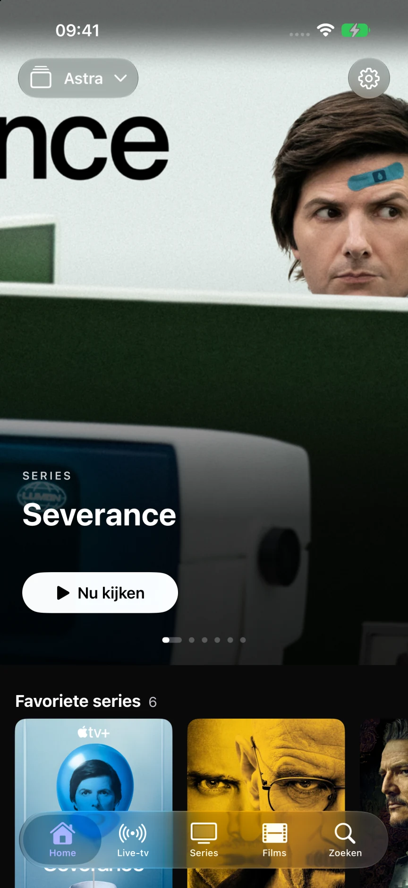
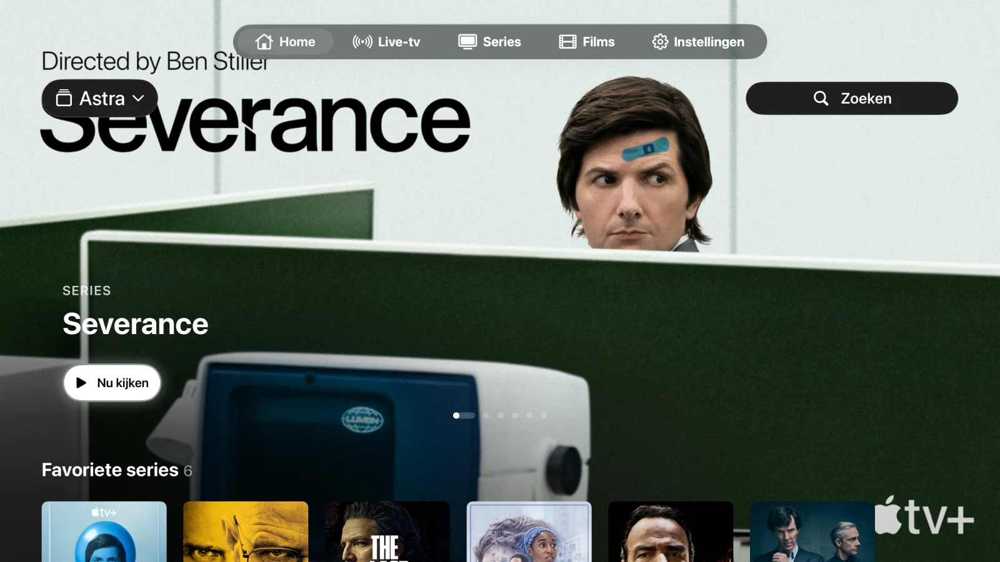
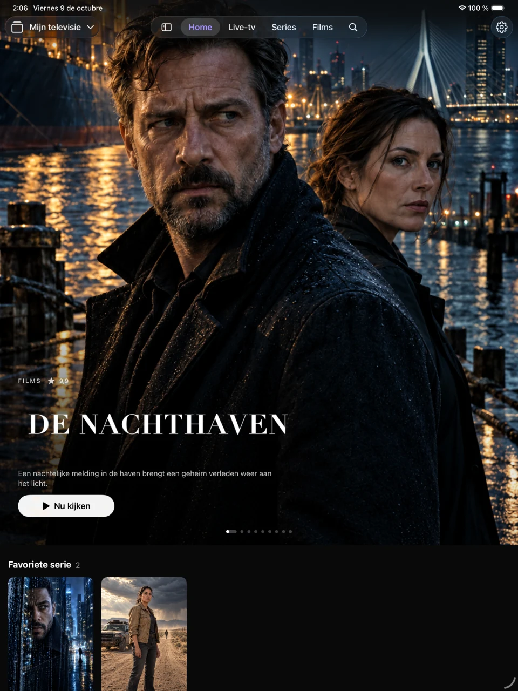

Je lijsten, gekoppeld
Voeg een M3U/M3U8-URL of Xtream-verbinding toe. Wissel tussen lijsten en houd catalogi, favorieten en geschiedenis gescheiden. Je kunt op iPhone en iPad ook M3U-bestanden importeren.
Gemaakt voor jouw schermen
Je eigen afspeellijsten, in een gratis speler zonder advertenties van Astra. Verbind M3U of Xtream en geniet van je zenders, films en series op iPhone, iPad en Apple TV.
Gebruik je eigen afspeellijst. Astra is nog niet beschikbaar in de App Store. Jij beslist of je de e-mail met het verzoek om een melding verstuurt.

Alles op zijn plek
Een bibliotheek die ruimte biedt aan jouw content. Je lijsten, favorieten en kijkvoortgang, met bedieningselementen die op elk scherm vertrouwd aanvoelen.
Voeg een M3U/M3U8-URL of Xtream-verbinding toe. Wissel tussen lijsten en houd catalogi, favorieten en geschiedenis gescheiden. Je kunt op iPhone en iPad ook M3U-bestanden importeren.
Blader door zenders, bekijk wat er wordt uitgezonden en raadpleeg de XMLTV-gids. Houd je favoriete zenders bij de hand.
Ontdek films en series, kies een aflevering en kijk verder vanaf het punt waar je was gestopt. Audio en ondertiteling zijn beschikbaar als de bron deze aanbiedt.
Eén app. Jouw schermen.
Tabs op de iPhone, een zijbalk op de iPad en bedieningselementen die zijn afgestemd op de Apple TV-afstandsbediening. Compatibele lijsten, favorieten en voortgangsinformatie kunnen worden gesynchroniseerd via je persoonlijke iCloud-account.


AirPlay en 'Beeld in beeld' (Picture in Picture) maken gebruik van de systeemeigen speler, mits het systeem en het bestandsformaat dit ondersteunen. Lokaal geïmporteerde bestanden worden niet als afspeelbare bestanden naar Apple TV overgezet.
De publieke lancering voor iPhone, iPad en Apple TV wordt voorbereid. Astra is nog niet beschikbaar in de App Store. Je kunt per e-mail een melding aanvragen voor wanneer de app wordt gelanceerd.
Nee. Astra verkoopt of levert geen zenders, films, series, afspeellijsten of tv-abonnementen. Gebruik een bron waarvoor je toestemming hebt.
Je bibliotheek blijft op je apparaat staan. Compatibele gegevens kunnen worden gesynchroniseerd via je persoonlijke iCloud-database. Gebruiksstatistieken en crashrapporten zijn optioneel; ze staan standaard uitgeschakeld en kunnen afzonderlijk worden beheerd in de instellingen.
Deze website maakt geen gebruik van analytics, advertenties, formulieren of eigen cookies. De site wordt gehost door GitHub Pages; zij kunnen technische bezoekersinformatie registreren in overeenstemming met hun privacyverklaring.
Ontwikkeld door Juan Cazalla Estrella.